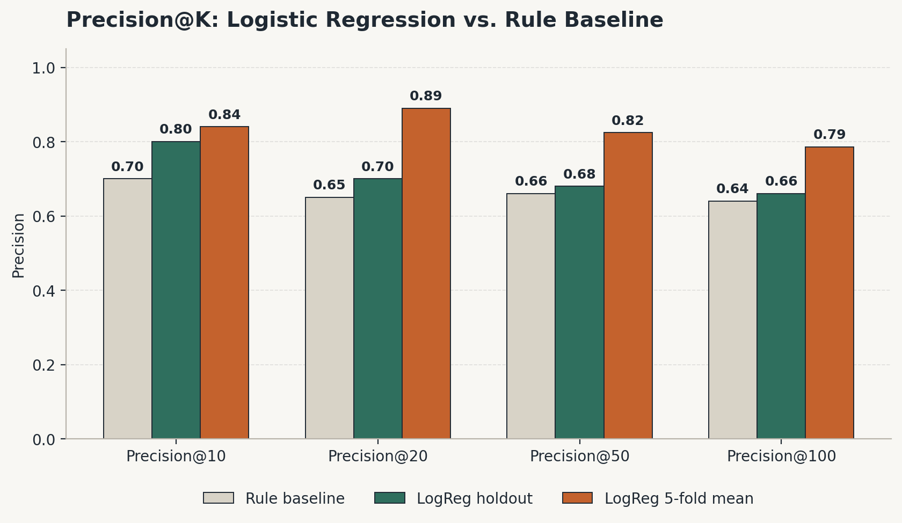
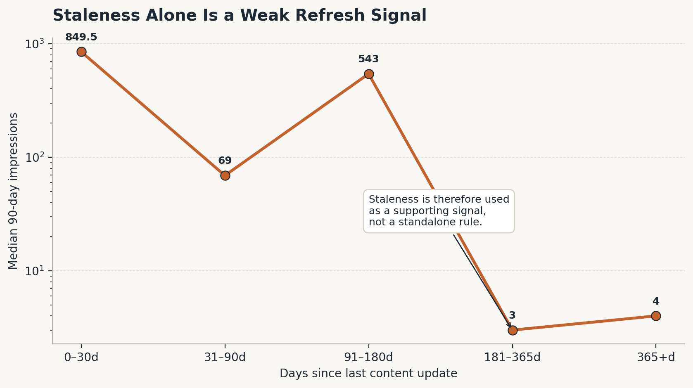
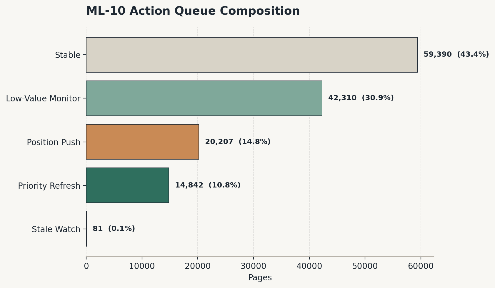

A machine learning approach to ranking content-refresh opportunities
using historical search and engagement performance.
Uzair Ahmed
FlyRank ML Internship
Lane: Refresh / Content Opportunity Scoring
August 2026
00 · Abstract
Abstract
Large SEO content libraries make manual page-by-page review impractical, so this project asks whether historical search and engagement data can rank webpages for refresh review more effectively than a transparent rule-based approach. The study uses historical search-performance features from the April–May 2026 feature window and a June 2026 outcome window, with the target identifying pages whose June search impressions declined substantially relative to their historical level while ensuring the model uses only pre-outcome information. A Logistic Regression ranking model was evaluated against a transparent rule baseline using a client-grouped holdout, with 42 clients used for training and 11 held out for testing with no client overlap. On the held-out clients, the model achieved Precision@10 of 0.80 compared with 0.70 for the rule baseline, providing directional evidence that the learned ranking approach can improve prioritization over this baseline on the evaluated population rather than proving performance on future clients or periods. The final workflow converts the ranking signal into an auditable review queue with action archetypes and human-review safeguards, supporting editorial prioritization without automatically rewriting, publishing, deleting, redirecting, or otherwise changing webpages.
01 · Introduction / Problem statement
Which pages deserve attention first?
Large websites can contain thousands or millions of webpages. Even when an
SEO team has access to search-performance data, reviewing every page with
equal attention is inefficient. The operational problem is therefore one
of prioritization: given the information available about a page, which
pages should an SEO specialist investigate first?
This capstone studies whether historical search and engagement signals can
be used to rank pages according to their observed risk of a substantial
future decline in search impressions.
The goal is deliberately narrower than predicting Google's ranking
algorithm. Search visibility is affected by many factors outside this
dataset, and the analysis does not attempt to reproduce Google's systems.
Instead, the project focuses on a practical SEO decision that can be
supported by historical performance data.
Decision supported
Research question
Can historical search-performance data rank refresh opportunities better
than a transparent rule?
Unit of analysis
One webpage represented by a content identifier within a client
Output
Ranked, reason-coded review queue
Decision
Which pages should an SEO team review first?
Why ranking rather than automatic classification?
The practical workflow does not require the model to decide that a webpage
must be refreshed. Instead, the model is most useful if it can place pages
that deserve investigation near the top of a review queue.
This makes ranking metrics such as Precision@K particularly relevant.
For example, Precision@10 asks how many of the ten highest-ranked pages
belong to the target class. This mirrors the real situation in which an
editor may only have enough time to inspect a small number of pages first.
The cost of a false positive is primarily wasted editorial review time.
The cost of a false negative is that a potentially declining page may not
receive timely attention. The model therefore acts as decision support,
with the final editorial decision remaining human.
02 · Data
Data and study population
The analysis was built from the FlyRank ML Internship warehouse. Historical
performance information was kept separate from the future outcome period
so that the model could only use information that would have been available
before the target outcome occurred.
Warehouse components
Component
Grain
Use in this study
fact_content_daily_performance
Report date × client × content
Historical search-performance aggregation and outcome construction
dim_content
Content item
Content update information used by the refresh-action logic
Time-window design
Feature window
April–May 2026
Outcome window
June 2026
The model features were calculated from historical April–May performance.
The target was then constructed from June performance. This separation is
central to the study because using future information to construct features
would make the evaluation optimistic and unsuitable for a real
prioritization workflow.
Study population
The feature-building stage produced 389,153 client-content records.
After applying the historical impression floor required for a stable
percentage-change target, the final evaluated population contained
136,830 pages across 53 clients.
Measure
Value
Initial feature records
389,153
Final evaluated pages
136,830
Clients
53
Historical impression floor
100 impressions
Declining-label rate
58.0%
Exclusions and public-safety boundaries
Rows without the required search-performance coverage were excluded from
the feature-building process. Pages with fewer than 100 historical
impressions were excluded from the evaluated population because percentage
changes based on very small historical denominators can be unstable.
The model does not use client identifiers or content identifiers as
predictive features. These identifiers are used only for joins and grouped
validation.
Variables derived from the future outcome were also excluded from the final
feature set. In particular, target-derived trend fields were not allowed
to become model inputs.
The public paper intentionally contains no client names, domains, URLs,
private search queries, credentials, or raw warehouse exports.
Identifiers used internally remain pseudonymous.
03 · Methodology
Model, baseline, and validation
The modeling workflow was designed around four principles: historical
features only, an explicit outcome definition, a transparent baseline, and
validation that keeps client identities separated between training and
testing.
Label definition
Observed decline
A page is assigned is_declining_label = 1 when its June
impressions are at least 70% below its April–May historical level.
In percentage-change notation:
is_declining_label = 1 when impressions_change_pct ≤ −70%
The −70% threshold was selected to focus the analysis on a substantial
decline rather than ordinary short-term movement.
Predictive features
Feature
Meaning
Information period
impressions_90d
Total historical search impressions
April–May 2026
clicks_90d
Total historical search clicks
April–May 2026
avg_position_90d
Historical impression-weighted average position
April–May 2026
ctr_90d
Historical click-through rate
April–May 2026
Transparent rule baseline
Before fitting the learned model, the project established a transparent
rule-based ranking score. The baseline combines three normalized signals
with fixed weights.
Baseline component
Weight
Historical impressions
0.50
Average position
0.30
Staleness
0.20
This baseline is useful because it is transparent and easy for an SEO team
to understand. It also provides a concrete benchmark against which the
learned ranking model can be evaluated.
Logistic Regression model
The final model uses a scikit-learn pipeline consisting of median
imputation, standard scaling, and Logistic Regression with
max_iter=1000 and random_state=42.
Logistic Regression was selected as an interpretable first model rather
than a deliberately complex ensemble. The objective of this capstone is
not simply to maximize a benchmark score; it is to determine whether a
repeatable and understandable learned ranking signal can improve the
review-prioritization decision.
Grouped validation
The primary evaluation uses GroupShuffleSplit with
client_hash_id as the grouping variable.
Split component
Value
Training clients
42
Held-out test clients
11
Client overlap
0
Test rows
45,599
A row-level random split was deliberately avoided. Multiple pages can
belong to the same client and may share client-specific characteristics.
Allowing the same client to appear in both train and test could therefore
make performance appear stronger than it would be on an unseen client.
Leakage audit
The final feature set was checked against the outcome definition to ensure
that the model did not directly or indirectly receive the target.
June outcome fields and target-derived trend variables were excluded.
Client and content identifiers were also excluded from the predictive
feature matrix.
The feature and outcome windows were kept separate: April–May information
was used to construct predictors, while June information was reserved for
the outcome.
The validation work also included a deliberate leakage injection exercise.
Adding the target to a toy model produced an obvious jump in performance,
while removing it returned the model to its normal behavior. This provided
an explicit check that the audit harness could detect direct target
leakage.
04 · Results
Results
The primary question is whether the learned ranking model places more
declining pages near the top of the review queue than the transparent
baseline on the same held-out clients.
Model versus baseline
Metric
Rule baseline
Logistic Regression
Precision@10
0.70
0.80
Precision@20
0.65
0.70
Precision@50
0.66
0.68
Precision@100
0.64
0.66

Figure 1 could not be loaded. Check that precision_comparison.png is inside the figures folder next to this HTML file.';"
>
Figure 1.
Precision@K comparison between the transparent rule baseline and the
Logistic Regression model on the same client-grouped evaluation design.
Primary finding
On the held-out clients, the Logistic Regression model achieved
Precision@10 of 0.80 compared with 0.70 for the rule baseline. In practical
terms, eight of the ten highest-ranked pages in this evaluation belonged
to the declining target class under the model, compared with seven of the
ten highest-ranked pages under the baseline.
The model also outperformed the baseline at Precision@20, Precision@50,
and Precision@100, although the difference becomes smaller as the queue
gets deeper.
The appropriate interpretation is therefore not that the model is
"correct" about every page. Rather, the evidence suggests that it can
improve the concentration of target pages near the top of the review queue
relative to this particular transparent baseline.
Model interpretation
Because the model is Logistic Regression with standardized features, its
coefficients provide a relatively interpretable summary of the direction
and relative magnitude of the learned associations.
Feature
Standardized coefficient
ctr_90d
−0.669
avg_position_90d
−0.192
impressions_90d
−0.105
clicks_90d
−0.070
Historical CTR has the largest standardized coefficient among the four
features in the fitted model. This indicates that CTR contributes more
strongly to the model's learned ranking signal than the other included
features after standardization.
This should be interpreted as an association within this dataset and
validation design. It should not be interpreted as evidence that CTR
causes future visibility decline.
Classification errors at a 0.5 threshold
Although the capstone is fundamentally a ranking problem, examining
threshold-based classification errors helps show why the final workflow
does not use the model as an automatic yes/no decision system.
Outcome at 0.5 threshold
Count
Correct classifications
26,910
False positives
15,630
False negatives
3,059
These errors reinforce the operational framing: the model is more
appropriate as a ranking signal for prioritization than as an autonomous
binary decision-maker.
05 · Limitations & honest framing
What the evidence does — and does not — support
A useful research artifact should make its boundaries explicit. The
following limitations determine how the reported results should be used.
Evaluation population is smaller than the scoring population
The model was evaluated on 11 held-out clients, while the final scoring
workflow covers 53 clients. The measured Precision@10 therefore describes
the evaluation population and should not be treated as a guarantee for all
future scored pages.
Grouped evaluation contains relatively few clients per split
Client-level grouping is more appropriate than a random row split for this
problem, but the number of held-out clients remains limited. Performance
estimates can therefore vary across groups.
The result is correlational
The model identifies statistical associations with the observed decline
label. It does not demonstrate that any feature causes decline.
A refresh is not guaranteed to recover performance
The analysis identifies pages that may deserve investigation. It does not
test whether editing, rewriting, improving internal links, changing
metadata, or otherwise refreshing those pages causes their search
performance to improve.
The model observes only a limited set of signals
Important factors such as content quality, search intent, seasonality,
competitor changes, algorithm changes, editorial priorities, and broader
business context are not directly represented in the four-feature model.
The baseline is intentionally simple
The model beating this baseline demonstrates improvement over this
specific transparent rule. It does not establish superiority over a
production-grade SEO prioritization system or over more advanced machine
learning approaches.
This is a snapshot rather than a long-term monitoring study
Future labeled windows are needed to determine how stable the ranking
signal is over time and whether feature distributions or model performance
drift.

Figure 2 could not be loaded. Check that staleness_weak_signal.png is inside the figures folder.';"
>
Figure 2.
Staleness signal audit from the earlier baseline analysis. The relationship
between content age and search visibility is not sufficiently clean to
treat staleness alone as a reliable refresh-priority signal.
Claim ladder
Claim level
What this study supports
Observed
The model achieved higher Precision@K than the rule baseline on the
evaluated client-grouped holdout.
Directional
Historical search-performance signals may provide a useful ranking signal
for refresh prioritization.
Decision-support
The score can help an SEO team decide which pages to inspect first.
Not supported
The study does not prove Google's ranking algorithm, causality, or that
refreshing a ranked page will restore traffic.
06 · Ranked recommendations
The action playbook
The model score becomes operationally useful only when an SEO team can
translate it into a manageable review queue. The final workflow therefore
groups scored pages into auditable action archetypes.
These archetypes are not additional machine-learning predictions. They are
simple post-scoring rules designed to connect model ranking with practical
editorial review decisions.

Figure 3 could not be loaded. Check that archetype_composition.png is inside the figures folder.';"
>
Figure 3.
Composition of the 136,830-page scoring population across the action
archetypes developed in the Week-7 action playbook.
REF-01 · HIGHEST PRIORITY
Priority Refresh
14,842 pages
Pages with higher model-ranked decline risk and relatively high historical
search impressions. These pages should receive the first round of human
review because there is meaningful historical visibility to protect.
REF-02 · SECOND PRIORITY
Position Push
20,207 pages
Pages with higher model-ranked decline risk and historical average position
between 10 and 20. These pages may warrant review of on-page relevance,
internal linking, content structure, and other page-level opportunities
before considering a full rewrite.
REF-03 · WATCH
Stale Watch
81 pages
Pages with higher model-ranked decline risk that do not fall into the
higher-value or position-focused groups but have remained unchanged for a
longer period. These pages should receive a targeted freshness audit.
REF-04 · MONITOR
Low-Value Monitor
42,310 pages
Pages with higher model-ranked decline risk but relatively low historical
search volume. These pages can be monitored and reconsidered during a
later review cycle rather than consuming immediate editorial capacity.
STB-01 · NO IMMEDIATE ACTION
Stable
59,390 pages
Pages below the selected high-risk scoring threshold. They are not part of
the immediate flagged queue produced by this scoring cycle.
Human-review safeguards
The model recommends review — not automatic changes
Do not automatically publish, rewrite, delete, redirect, or otherwise
modify a webpage solely because it receives a high model score.
Recently updated pages should be manually checked before another refresh
is recommended.
Pages below the 100-impression historical floor are outside the evaluated
population and should not receive model-supported recommendations.
Sensitive-topic content such as legal, medical, or financial content
requires additional expert review beyond this scoring workflow.
The model score should be treated as one input into editorial
prioritization, not as a replacement for SEO expertise.
Monitoring and retraining triggers
A future implementation should track Precision@10 and other ranking
metrics on newly labeled outcome windows. A substantial reduction in
ranking performance should trigger investigation.
The feature distributions should also be monitored. Large shifts in
impressions, clicks, CTR, or average position may indicate that the
training environment no longer represents the population being scored.
As additional labeled outcome windows become available, retraining should
be performed on a rolling basis rather than relying indefinitely on a
single historical model.
07 · Reproducibility
Inspect the research workflow
The capstone was developed incrementally across the internship. Each
notebook represents a stage of the research workflow, from framing the
question to producing the final action playbook.
The reported results are intended to be traceable to the corresponding
analysis notebooks rather than manually invented for the paper. Model
training uses fixed random-state settings where applicable, and the
validation design is explicitly documented so that the reader can inspect
how the reported comparison was produced.